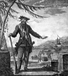

Daha çok “Blackbeard” adıyla bilinen Edward Teach (1680–1718), korsanlığın altın çağı olan 18. yy’ın başlarında yaşamış ünlü bir İngiliz korsanıdır. Uzun boğumlu sakalı, kırmızı ceketi ve her iki yanında asılı duran kılıçları ile denizcilik dünyasında korku veren bir imaja sahip olmuştur. Ancak bu kariyeri oldukça kısa sürmüş ve Kuzey Carolina’da sıkıştırılıp öldürülmesi ile son bulmuştur.
Blackbeard’ın hayatının erken dönemleri, belirsizliğini korumaktadır. İngiltere’de doğmuş ve İspanyol Halefler Savaşı sırasında devlet korsanlığı yapmıştır. Devlet korsanları, krallık tarafından düşman gemilerine saldırma ve ganimet toplama hakkı verilen özel mülkiyete ait savaş gemilerinde çalışırdı. İngilizler, Karayipler’de İspanyol ticaretini zayıflatmak için devlet korsanlarını kullanıyordu. Bu sayede koskoca bir korsan neslinin yetişmesine neden olmuşlardı.

1713 yılında İngiltere savaştan çekilince aralarında Blackbeard’ın da bulunduğu korsanlar Karayipler’deki saldırılarına devam ettiler. İngilizler durması için ona af talep etmiş ancak o bunu reddedince resmen bir kanun kaçağı haline gelmişti. Sonraki dört yıl içerisinde elli gemiyi ele geçirip yağmaladığına inanılmaktadır. Kişisel donanması dört gemi ve 300 korsandan oluşuyordu. Zaman zaman Kuzey Carolina’daki Ocracoke Adası’nda saklanıyor ve çaldığı malları Amerikan kolonicilere satıyordu.
1717 Kasım ayında Blackbeard bir Fransız köle gemisi olan La Concorde’a saldırıp gemiyi ele geçirdi. Gemiye “Kraliçe Anne’nin İntikamı” adını verdi ve kendi bayrağını çekti. Sonraki ilkbahar “Kraliçe Anne’nın İntikamı” ve diğer gemileri, Güney Carolina’daki Charleston limanını ablukaya aldı. Birkaç gemiyi yağmaladıktan sonra Kuzey Carolina’daki saklanma yerine kaçtı.
Blackbeard, kasım ayı bitmeden kraliyet donanmasına bağlı bir filo tarafından öldürüldü. Kesik başı diğer korsanlara ibret olsun diye Virjinya’da bir mızrağın ucuna takılarak halka gösterildi. Bu tarihten itibaren korsan konulu film ve kitaplara konu oldu. Açık denizlerde kural tanımazlığın ve romantizmin sembolü haline geldi.
Ek Bilgiler
1- Blackbeard’ın siyah zemin üzerine beyaz iskeletten oluşan kendi bayrağı vardı. Daha ünlü olan Jolly Roger’in bayrağında bir kafatası ve çapraz kemikler bulunmaktadır. Bu simge aynı zamanda İngiliz korsan Edward England tarafından da kullanılmıştı.
2- 2006 yapımı “Blackbeard” filminde ünlü korsanı İskoç aktör Angus Macfadyen (1963–) canlandırmıştır.
3- “Kraliçe Anne’nin İntikamı”nın enkazı 1996 yılında Kuzey Carolina’daki Beaufort Körfezi’nde altı metre derinlikte bulunmuştur. Gemi moloz ve diğer kalıntıların arasında seçilen bronz bir çan sayesinde tanınmıştır.